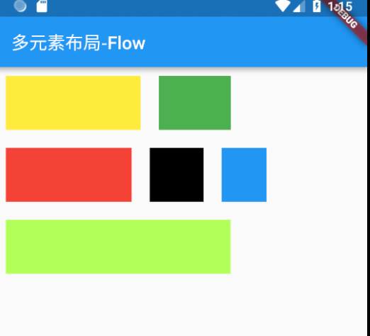
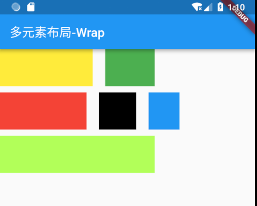
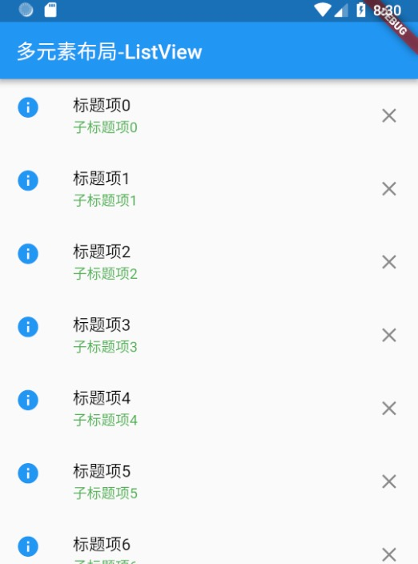
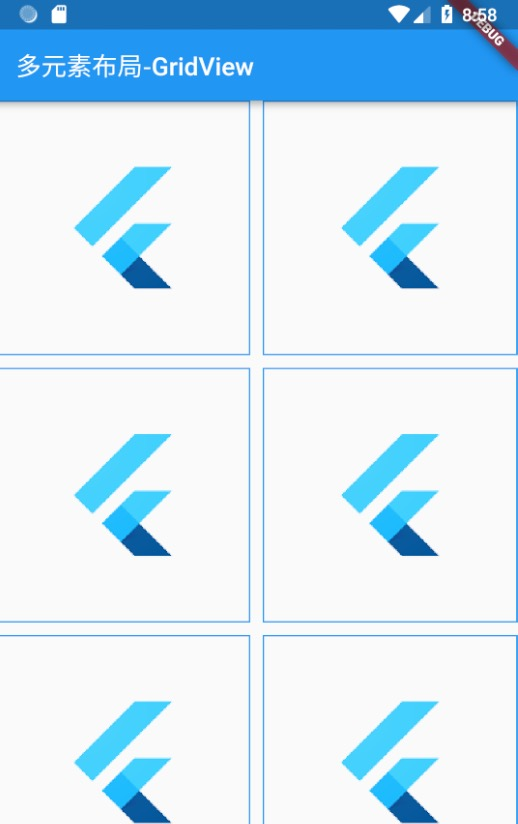

这一章中说明所有剩余的常用多元素布局，包括Flow、Wrap、ListView等。
Flow布局 Flow流布局可以认为是一种自定义布局方式，它可以根据不同效果来进行布局展示，只不过更多情况下是用来实现流式布局效果。
布局规则 Flow布局必须要指定一个FlowDelegate，所有的布局效果都是通过FlowDelegate中设置的。下面分别说明下FlowDelegate 的各个方法，分别在Flow布局中起到什么作用。
Size getSize(BoxConstraints constraints) 设置控件大小，也就是子控件可用的布局大小。默认使用约束中的最大值。BoxConstraints getConstraintsForChild(int i, BoxConstraints constraints) 设置子控件约束，i表示子控件下标；constraints 为 父控件透传的约束。默认使用该约束信息。注意，如果使用其它约束内容，需要重写shouldRelayout方法。bool shouldRelayout(covariant FlowDelegate oldDelegate) 设置什么情况下需要调整子控件的位置，默认情况下永远也不需要调整，这也是优化的一个原因。void paintChildren(FlowPaintingContext context) 对子控件进行绘制，注意这个方法是抽象的，必须要重写。这个方法里可以通过context.paintChild来进行绘制每个子控件。bool shouldRepaint(covariant FlowDelegate oldDelegate) 需要重绘时，该值设置为true，注意该值设置为false也有可能触发绘制流程，比如触发重布局操作等。这个方法也是抽象的，必需重写。
上面FlowDelegate的所有方法共同决定了Flow的布局效果。可以看下下面的使用示例。
布局示例 1 2 3 4 5 6 7 8 9 10 11 12 13 14 15 16 17 18 19 20 21 22 23 24 25 26 27 28 29 30 31 32 33 34 35 36 37 38 39 40 41 42 43 44 45 46 47 48 49 50 51 52 53 54 55 56 57 58 59 60 61 62 63 64 65 66 67 68 69 class MyFlowPage extends StatefulWidget @override State<StatefulWidget> createState() { return _MyFlowPageState(); } } class _MyFlowPageState extends State <StatefulWidget > var width = 80.0 ; var height = 60.0 ; @override Widget build(BuildContext context) { return Scaffold( appBar: AppBar( title: Text('多元素布局-Flow' ), ), body: Flow(delegate: MyFlowDelegate(EdgeInsets.all(10 )), children: <Widget>[ new Container(width: 150 , height: height, color: Colors.yellow,), new Container(width: 80 , height: height, color: Colors.green,), new Container(width: 140 , height: height, color: Colors.red,), new Container(width: 60 , height: height, color: Colors.black,), new Container(width: 50 , height: height, color: Colors.blue,), new Container(width: 250 , height: height, color: Colors.lightGreenAccent,), ],), ); } } class MyFlowDelegate extends FlowDelegate EdgeInsets margin = EdgeInsets.zero; MyFlowDelegate(this .margin); @override void paintChildren(FlowPaintingContext context) { var x = margin.left; var y = margin.top; for (int i = 0 ; i < context.childCount; i++) { var w = context.getChildSize(i).width + x + margin.right; if (w < context.size.width) { context.paintChild(i, transform: new Matrix4.translationValues( x, y, 0.0 )); x = w + margin.left; } else { x = margin.left; y += context.getChildSize(i).height + margin.top + margin.bottom; context.paintChild(i, transform: new Matrix4.translationValues( x, y, 0.0 )); x += context.getChildSize(i).width + margin.left + margin.right; } } } @override bool shouldRepaint(FlowDelegate oldDelegate) { return oldDelegate != this ; } }
界面效果如下：

这个示例也是Flow流布局最常用的效果。
Wrap布局 Wrap可以认为也是类似于Flex的效果，与Row、Column非常相似。只不过Wrap能够支持多行多列，当主轴上的空间不足时，自动向交叉轴方向上去扩展。
属性说明
direction 主轴方向，默认为水平方向
alignment 主轴方向的对齐方式，默认为start起始位置，枚举类型，与Flex的对齐方式一样。
spacing 主轴方向上子控件之间的间距
runAlignment 交叉轴方向上每一行（或一列）的对齐方式。有点绕口，不过这个不是交叉轴方向上的对齐方式。
runSpacing 交叉轴方向上一行（或一列）的间距
crossAxisAlignment 交叉轴方向上子控件的对齐方式
verticalDirection、textDirection 与Flex参数一致，分别表示垂直方向start、end设置；文本对齐方式
布局规则 流式布局效果，先在主轴上进行填充，主轴上不可放置则在交叉轴方向上另起一行（或一列），重新在主轴方向上填充。
布局示例 如果要达到之前Flow示例效果，可以采用如下的方式：
1 2 3 4 5 6 7 8 9 10 11 12 13 14 15 child: Wrap( alignment: WrapAlignment.start, runAlignment: WrapAlignment.start, crossAxisAlignment: WrapCrossAlignment.end, spacing: 20 , runSpacing: 10 , children: <Widget>[ new Container(width: 150 , height: height, color: Colors.yellow,), new Container(width: 80 , height: height, color: Colors.green,), new Container(width: 140 , height: height, color: Colors.red,), new Container(width: 60 , height: height, color: Colors.black,), new Container(width: 50 , height: height, color: Colors.blue,), new Container(width: 250 , height: height, color: Colors.lightGreenAccent,), ], ),
界面效果如下：

ListView布局 ListView布局可以说是使用最多的一批布局效果，所有的列表展示都可以通过ListView进行布局。相比Flex方式（Row、Column），在主轴方向上不限于父控件约束，也就是说可以在主轴方向上设置了ScrollView，可以滑动进行展示。
ListView创建方式 ListView有两种常用的创建方式，第一种是直接将所有子控件一一列出，赋值给children，使用常用构造方法：
1 2 3 4 5 6 7 8 9 10 11 12 13 14 15 16 17 ListView({ Key key, Axis scrollDirection = Axis.vertical, bool reverse = false , ScrollController controller, bool primary, ScrollPhysics physics, bool shrinkWrap = false , EdgeInsetsGeometry padding, this .itemExtent, bool addAutomaticKeepAlives = true , bool addRepaintBoundaries = true , bool addSemanticIndexes = true , double cacheExtent, List <Widget> children = const <Widget>[], int semanticChildCount, })
另一种方式是通过Builder创建，子控件通过WidgetBuilder创建，使用Builder构建方法：
1 2 3 4 5 6 7 8 9 10 11 12 13 14 15 16 17 18 ListView.builder({ Key key, Axis scrollDirection = Axis.vertical, bool reverse = false , ScrollController controller, bool primary, ScrollPhysics physics, bool shrinkWrap = false , EdgeInsetsGeometry padding, this .itemExtent, @required IndexedWidgetBuilder itemBuilder, int itemCount, bool addAutomaticKeepAlives = true , bool addRepaintBoundaries = true , bool addSemanticIndexes = true , double cacheExtent, int semanticChildCount, })
这两种的区别是，第一种更简单直观一些，适用于固定的列表项，而第二种更灵活一些，适用于未知的列表项。
部分字段说明 由于ListView字段较多，下面只说明了部分字段：
scrollDirection 滚动方向，也就是主轴方向
reverse 滚动方向是否为阅读方向，从Scroll集成的字段
controller 滚动控制，可以设置滚动位置，滚动效果等
cacheExtent 视口在可见区域之前和之后有一个区域，用于缓存用户滚动时即将可见的项目
shrinkWrap 常用于内容大小不确定情况，如果为false，则滚动视图将扩展到允许的最大大小。如果是无界约束，则 shrinkWrap 必须为 true.默认设置为false.
实际上ListView中各字段基本都与ScrollView一致。
ListTile ListTile是一个固定格式的一行内容，常用来在ListView中进行每一项的展示使用。
leading 最左侧的部分，Widget类型，一般设置图标。
title 标题项，Widget类型，一般设置文本。
subtitle 子标题，与title类型相同。
trailing 最右侧的部分，Widget类型
onTap 点击事件
onLongPress 长按事件
示例如下：
1 2 3 4 5 6 ListTile( leading: Icon(Icons.info, color: Colors.blue,), title: Text('标题项' , style: TextStyle(color: Colors.black),), subtitle: Text('子标题项' , style: TextStyle(color: Colors.green),), trailing: Icon(Icons.close), )
結果：
使用示例 1 2 3 4 5 6 7 8 9 10 11 12 13 14 15 return Scaffold( appBar: AppBar( title: Text('多元素布局-ListView' ), ), body: ListView.builder( itemCount: 20 , itemBuilder: (context, index) => ListTile( leading: Icon(Icons.info, color: Colors.blue,), title: Text('标题项$index ' , style: TextStyle(color: Colors.black),), subtitle: Text('子标题项$index ' , style: TextStyle(color: Colors.green),), trailing: Icon(Icons.close), ), ), );
布局效果：

GridView布局 GridView 是网格形状布局，与ListView一样，继承自 BoxScrollView，所有很多特性都是类似的。
创建方式 count方式 采用GridView.count来创建GridView，这种方式指定了网格形状在交叉轴方向（也就是竖轴方向）上分配几个控件。具体个数由crossAxisCount来指定。示例如下：
1 2 3 4 5 6 7 8 GridView.count(crossAxisCount: 2 , crossAxisSpacing: 10 , mainAxisSpacing: 10 , children: List <Widget>.generate(10 , (int index) => Container(decoration: BoxDecoration(border: Border.all(width: 1 , color: Colors.blue),), child: Image.network('http://cdn.jsdelivr.net/gh/flutterchina/website@1.0/images/flutter-mark-square-100.png' )),) ),
结果：

extent方式 采用GridView.extent来创建GridView，这种方式指定了交叉轴方向上每个控件的最大尺寸，由此给出一个合适的适配效果。通过maxCrossAxisExtent这个字段来设置。
具体示例不再说明。
其它方式 最主要的就是上面两种，但是还有一些其它创建方式，比如原生构造方式、builder方式、custom方式，基本都是通过网格布局代理以及子控件代理方式实现，没有太大的区别。